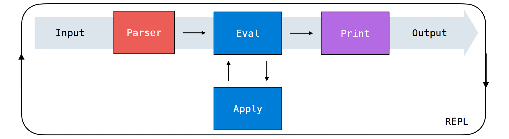

Ch3
Functional Programming : Scheme
- expressions:
- prefix operator notation (+ - *
quotientmodulo) - Primitive expression : symbols, numbers, booleans
- evaluation procedure: first evaluate operator and operand, then apply operator to operand
- boolean value :
#f(the only false value)和#t - 逻辑运算符：与python类似，short circuit、估值为第一条满足条件的表达式的值，而未必是真假
-
=, eq?, equal?
-
(= <a> <b>)返回true，若两表达式值相等 -
(eq? <a> <b>)返回true，若两表达式值相等，或指向同一对象，类似于python中is -
(equal? <a> <b>)返回true，当a和b是pairs时比较内容，否则等价于eq?
-
- definitions:
-
定义变量，如
(define pi 3.14)，注意这时define语句会返回symbolpi而非pi的值3.14 -
定义函数格式：
(define (<name> <formal parameters>) <body>)，例如(define (square x) (* x x)) -
支持嵌套函数和递归
-
lambda 表达式格式：
(lambda (<formal-parameters>) <body>)
- Compound values
- Pairs : 由
cons来construct，用car和cdr来取收首个元素和剩余元素，如(cons 1 2) - Recursive lists : scheme中的 list 均为 linked list，由pairs构造而成，既可用嵌套
cons+括号，也可以用list+括号，或quote+括号；
>(cons 1
(cons 2
(cons 3
(cons 4 nil)))) #nil represents empty list
(1 2 3 4)
>(list 1 2 3 4)
(1 2 3 4)
>(define one-through-four (list 1 2 3 4))
>(car one-through-four)
1
>(cdr one-through-four)
(2 3 4)
>(cons 10 one-through-four)
(10 1 2 3 4)
> (quote (1 x 3))
(1 x 3)
-
可以用
null?函数来判断list是否为empty list，以下用null?+递归，定义length和getitem函数
-
Symbolic data 1. 被evaluate成字面符号本身，而非符号所代表的值，称为quoted；既可以传单个变量，也可以传compound value比如
list -
special forms，非一般expression的语句 (control flow、define、let、begin......)
Control flow:
-
ifexpression :(if <predicate> <consequent> [alternative])，alternativeis optional；如果predicate为真，估值conssequent并return其值；否则alternative同理 -
condexpression : 类似于python中的if、elif、else -
letexpression :(let ([binding_1] ... [binding_n]) <body> ...)，其中每个binding都按形式(<name> <expression>)。估值过程如下：- 以current frame为parent，创建新的local frame
- 将每个
binding中的name绑到expression - 最后执行，并return
<body>中最后一条expression的值
-
beginexpression :(begin <body_1> ... <body_n>)，用一条begin将多条表达式打包成一条，依次执行每条body，最后return末条的值 -
defineandlambdaexpression -
quoteexpression : the input text is returned without evaluated
Lab 10
tail calls（尾递归）: 若递归函数的最后一个动作是call itself或者call another function（且该函数也是尾递归函数），则称为尾递归。
更权威的表述：a tail recursive way, where all of the recursive calls are tail calls. A tail call occurs when a function calls another function as the last action of the current frame.
尾递归的好处：最终返回的值就是递归depth最深的那次调用return的值，无需在“归”时有额外计算，无需re-visit那些earlier frames，于是经过优化就可以跳过一系列中间递归调用，执行更少步骤；也可以需要更少的memory来存放previous frames
利用尾递归优化：一般可以利用helper嵌套函数，update在current frame中的某个值，再将其传入新的call中。这样，所有computation都在recursion之前发生。而previous frame可以进行回收利用。
比如一个factorial 函数that is not tail recursive，可以优化为tail recursive function
(define (factorial n)
(define (fact-tail n result)
(if (= n 0)
result
(fact-tail (- n 1) (* n result))))
(fact-tail n 1))
Interpreters
REPL (Read-Eval-Print loop) :
